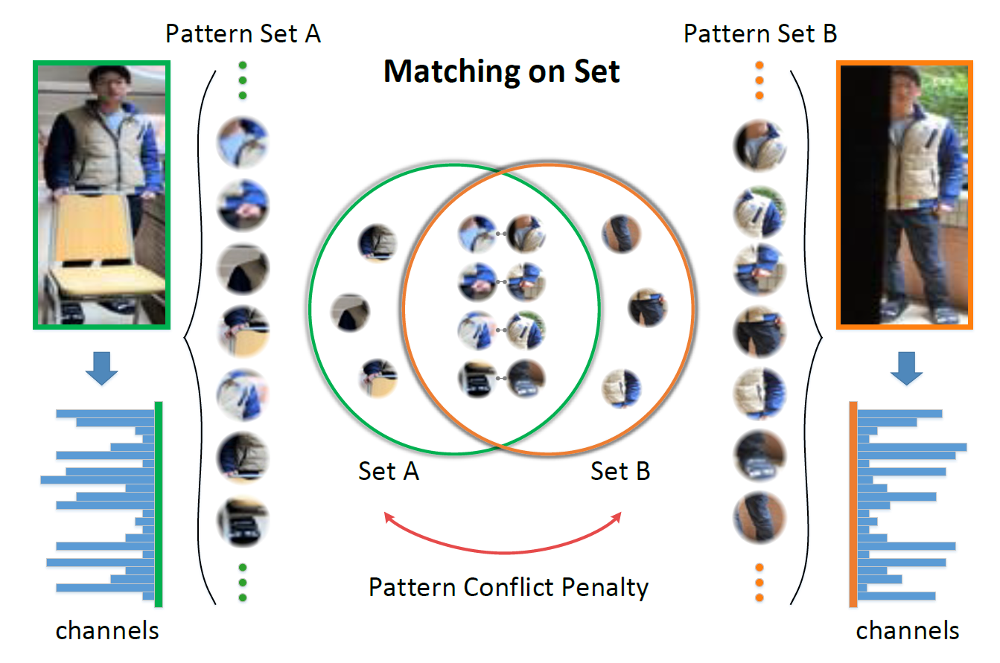
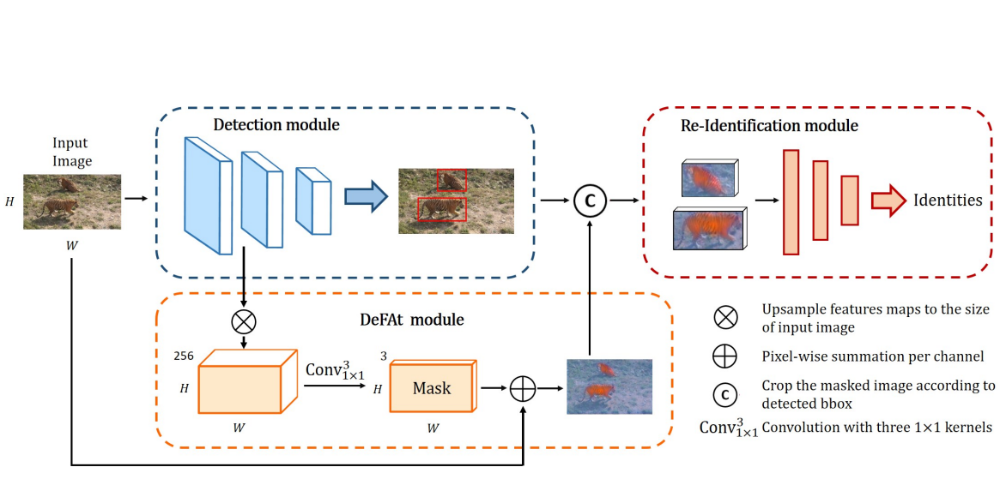
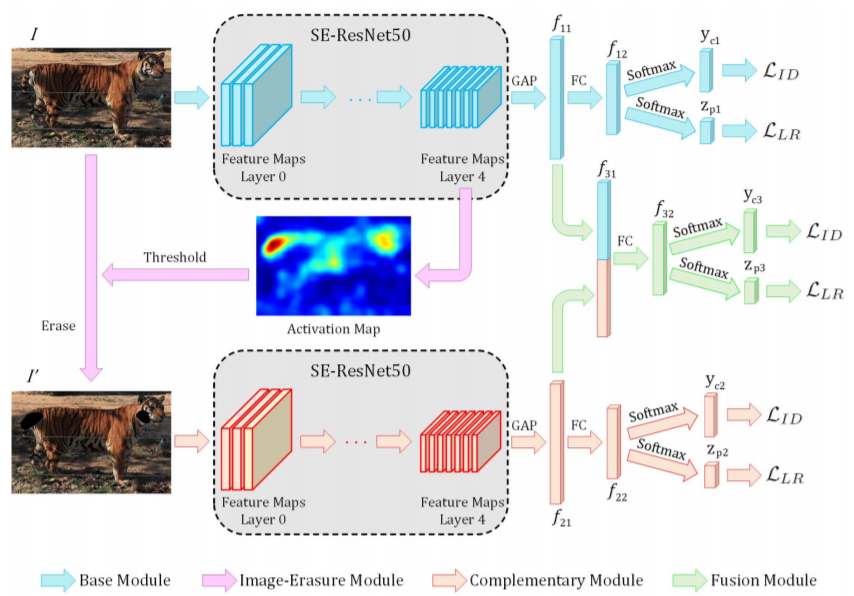

Xinhua Cheng 程鑫华School of Computer Science Sichuan University Chengdu, China Email: chengxh0519@gmail.com [Github] [dblp] [zhihu] |
 |
Mengxi Jia, Xinhua Cheng, Yunpeng Zhai, Shijian Lu, Siwei Ma, Yonghong Tian, Jian Zhang*
Matching on Sets: Conquer Occluded Person Re-identification Without Alignment AAAI Conference on Artificial Intelligence (AAAI), 2021. |
 |
Xinhua Cheng, Jianing Zhu, Nan Zhang, Qian Wang, Qijun Zhao*
Detection Features as Attention (DeFAt): A Keypoint-free Approach to Amur Tiger Re-Identification International Conference on Image Processing (ICIP), 2020. [PDF] |
 |
Ning Liu, Qijun Zhao*, Nan Zhang, Xinhua Cheng, Jianing Zhu
Pose-Guided Complementary Features Learning for Amur Tiger Re-Identification International Conference on Computer Vision Workshops (ICCVW), 2019. [PDF] [Code] |